워드프로세서-(구-1급) (2011-09-18 기출문제)
1과목: 워드프로세싱 일반
1. 다음 중 전자출판에 사용되는 용어에 관한 설명으로 옳지 않은 것은?
- 디더링(Dithering) : 기존의 그림을 다른 형태로 새롭게 변형, 수정하는 작업을 의미한다.
- 오버프린트(Over Print) : 대상체의 컬러가 배경색의 컬러보다 짙을 때에 겹쳐서 인쇄하는 방법이다.
- 필터링(Filtering) : 작성된 그림을 필터 기능을 이용하여 여러 가지 형태의 새로운 이미지로 바꾸어 주는 기능이다.
- 클립아트(Clipart) : 작업문서에 자주 사용되는 다양한 그림을 모아 둔 작은 그림의 모음집이다.
(정답률: 69%)

2. 다음 중 캐시 메모리(Cache memory)의 설명으로 옳지 않은 것은?
- RAM에 비해 메모리 용량이 작다.
- 시스템의 제어장치에 해당된다.
- 중앙처리장치와 주기억장치 사이에서 실행 속도를 높이기 위해 사용된다.
- 캐시 메모리는 주로 SRAM으로 만들어진다.
(정답률: 51%)
3. 다음 중 워드프로세서의 기능을 수행하는 장치에 대한 설명으로 옳지 않은 것은?
- 입력장치에는 스캐너, 마우스, 바코드 판독기 등이 있다.
- 표시장치에는 LCD, LED, PDP 등이 있다.
- 출력장치에는 플로터, 프린터, 디지타이저, 터치패드 등이 있다.
- 저장장치에는 하드디스크, EEPROM, SRAM 등이 있다.
(정답률: 67%)
4. 다음 중 마우스로 영역(블록)을 지정하는 방법으로 옳지 않은 것은?
- 한 단어 영역 지정 : 해당 단어 안에 마우스 포인터를 놓고 두 번 클릭한다.
- 한 줄 영역 지정 : 해당 줄의 왼쪽 끝으로 마우스 포인터를 이동하여 포인터가 화살표로 바뀌면 두 번 클릭한다.
- 문단 전체 영역 지정 : 해당 문단의 임의의 위치에 마우스 포인터를 놓고 세 번 클릭한다.
- 문서 전체 영역 지정 : 문단의 왼쪽 끝으로 마우스포인터를 이동하여 포인터가 화살표로 바뀌면 세 번 클릭한다.
(정답률: 40%)
5. 다음 중 문서의 발송에 대한 설명으로 옳지 않은 것은?
- 문서는 정보 통신망을 이용하여 발송함을 원칙으로 한다.
- 전자 문서인 경우 전자문서시스템 또는 업무관리 시스템 상에서 발송하여야 한다.
- 종이 문서인 경우에는 원본을 발송하여야 한다.
- 문서는 처리과에서 발송한다.
(정답률: 63%)
6. 다음 중 편지 병합(Mail Merge)에 대한 설명으로 가장 옳은 것은?
- 동일한 내용을 그대로 반복해서 여러 개의 문서를 만드는 경우에 적합하다.
- 외부 파일에 존재하는 데이터를 이용하여 작성할 수 있다.
- 병합 문서를 만들려면 문서의 1쪽에 편지 등의 내용문을, 2쪽에 이름 등의 데이터를 넣어 처리한다.
- 병합된 편지는 직접 인쇄할 수 있으나 파일로 만들 수는 없다.
(정답률: 31%)
7. 다음 중 공문서의 작성 방법에 대한 설명으로 틀린 것은?
- 문건 별 면 표시는 왼쪽 하단에 표시하고, 문서철별 면 표시는 중앙 하단에 표시한다.
- 문서를 수정할 경우에는 원안의 글자를 알 수 있도록 당해 글자의 중앙에 가로로 두선을 그어 수정하고, 수정한 자가 그 곳에 서명 또는 날인한다.
- 시행문을 정정한 때에는 문서의 여백에 정정한 글자 수를 표기하고 관인을 찍어야 한다.
- 금액을 표기할 경우에는 아라비아 숫자를 사용하되, 숫자 다음의 괄호 안에 한글로 기재한다.
(정답률: 37%)
8. 다음 문장을 효과적으로 입력시키기 위한 방법이 아닌 것은?
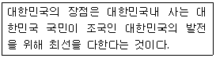
- '복사하기' 사용
- '상용구(Glossary)' 사용
- '매크로(Macro)' 사용
- '보일러 플레이트(Boiler Plate)' 사용
(정답률: 63%)
9. 문서과가 받은 문서가 2개 이상의 보조기관 및 보좌기관이 관련되는 때에는 어느 기관에 문서를 보내야 하나?
- 관련된 모든 보조기관
- 관련된 모든 보좌기관
- 상급기관
- 관련성의 정도가 가장 높은 기관
(정답률: 55%)
10. 다음은 워드프로세서의 어느 용어에 대한 설명인가?
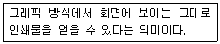
- 위지윅(WYSIWYG)
- 포스트 스크립트(Post Script)
- 래그드(Regged))
- 하이퍼텍스트(Hypertext)
(정답률: 62%)
11. 다음 중 저장기능에 대한 설명으로 옳지 않은 것은?
- 문서를 저장할 때 암호를 지정하여 저장할 수 있다.
- 입력 및 편집을 마친 문서를 보조기억장치에 파일형태로 저장하는 기능이다.
- 다른 이름으로 저장하는 경우 기존 문서의 파일이름은 삭제되고 새로운 이름으로 문서가 저장된다.
- 텍스트 파일이나 웹 문서 파일로 저장할 수 있다.
(정답률: 69%)
12. 다음 중 워드프로세서의 편집기능에 대한 설명으로 옳지 않은 것은?
- 사전기능은 단어를 입력해 주면 의미를 확인할 수 있게 해 준다.
- 맞춤법 검사 기능은 작성된 문서와 워드프로세서에 포함되어 있는 사전과 비교해 틀린 단어를 찾아주는 기능이다.
- 다단 편집이란 하나의 화면을 여러 개의 창으로 나누어 두 개 이상의 파일을 불러와 편집할 수 있는 기능이다.
- 수식 편집기는 문서에 복잡한 수식이나 화학식을 입력할 때 사용하는 기능이다.
(정답률: 63%)
13. 다음 중 글꼴 구현 방식에 대한 설명으로 옳지 않은 것은?
- 벡터(Vector) : 글자를 곡선이나 선분의 모임으로 그린 글꼴
- 오픈타입(Open type) : 외곽선 정보를 사용하며 높은 압축율을 통해 파일의 용량을 줄인 글꼴
- 트루타입(True type) : Windows에서 기본으로 제공하는 글꼴
- 비트맵(Bitmap) : 글자의 외곽선 정보를 그래픽 소프트웨어에 제공하며 계단 현상이 발생한다.
(정답률: 47%)
14. 다음 중 편집 관련 용어에 대한 설명으로 옳지 않은 것은?
- 각주 : 주석, 부가 설명, 참고 내용 등을 달기 위한 기능으로 매 페이지의 아래쪽에 표시되는 보충설명을 의미한다.
- 미주 : 명령 또는 기능을 수행하는데 필요한 선택항목으로 문서의 마지막 페이지에 표시된다.
- 홈베이스 : 편집 문서의 어디에서나 특별히 지정된 위치로 바로 이동하는 기능이다.
- 스타일 : 자주 사용하는 글자 모양, 문단 모양 등의 서식을 미리 만들어 놓고 필요할 때 한꺼번에 적용하는 기능이다.
(정답률: 50%)
15. 다음 중 검색 및 치환에 대한 설명으로 옳지 않은 것은?
- 표내에 들어있는 영문자는 대소문자를 구별하여 찾을 수 없다.
- 한자나 특수문자에 대해서도 검색이 가능하다.
- 치환할 때 사용자가 정의해 놓은 스타일을 적용할 수 있다.
- 한글 단어를 한자 단어나 영문 단어로 치환할 수 있다.
(정답률: 66%)
16. 다음 중 문자 입력 방법에 대한 설명으로 옳지 않은 것은?
- 한글 입력 : 2벌식은 받침에 상관없이 글자를 풀어서 입력한다.
- 영문 입력 : 영문 입력상태에서 영문자를 입력하며 대/소문자의 입력은 [Caps Lock]키나 [Shift]키를 눌러 입력한다.
- 한자 입력 : 한자의 음(音)을 알고 있을 때에는 부수 입력 변환, 외자 입력 변환 등으로 입력한다.
- 특수 문자 : 특수 문자 배열표(문자표)에서 해당 문자를 선택하여 입력한다.
(정답률: 63%)
17. 다음 중 전자출판(Electronic Publishing) 용어에 대한 설명으로 옳은 것은?
- 리딩(Leading) : 글자와 글자 사이의 간격을 미세하게 조정하는 작업
- 스프레드(Spread) : 이미지 변형 작업에서 명암, 조명도, 채도 등을 조절하는 작업
- 초크(Choke) : 신문에 난 사진처럼 미세한 점으로 사진을 표현하는 기법
- 모핑(Morphing) : 2개의 이미지를 적절히 연결시켜 변환, 통합하는 기법
(정답률: 63%)
18. 다음 중 용지의 종류에 대한 설명으로 가장 거리가 먼 것은?
- 낱장 용지는 한국공업규격에 따라 A판과 B판으로 나눈다.
- 연속 용지는 1줄에 출력되는 문자수에 따라 100자와 200자 용지가 있다.
- 낱장 용지는 주로 잉크젯이나 레이저 프린터에 많이 사용한다.
- 번호가 같을 경우에는 A판이 B판 보다 작은 용지이다.
(정답률: 64%)
19. 다음 중 서로 상반되는 의미를 지닌 교정부호로 짝지어 진 것은?
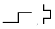
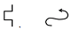
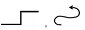
(정답률: 75%)
20. <보기 1>의 문장이 <보기 2>의 문장으로 수정되기 위해 필요한 교정부호들로만 올바르게 짝지어진 것은?
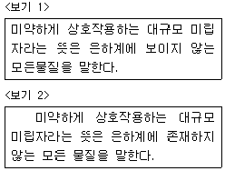
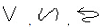
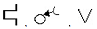
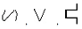
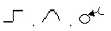
(정답률: 78%)
2과목: PC 운영 체제
21. 한글 Windows XP에서 [검색 결과] 창을 표시할 수 있는 방법으로 옳지 않은 것은?
- 디스크나 폴더를 선택한 후에 바로가기 메뉴에서 [검색]을 선택한다.
- [시작] 단추의 바로가기 메뉴에서 [검색]을 선택한다.
- 시작 메뉴에서 [검색]을 선택한다.
- 바탕 화면의 바로가기 메뉴에서 [검색]을 선택한다.
(정답률: 46%)
22. 다음 중 한글 Windows XP의 네트워크 환경에서 [네트워크 드라이브 연결]에 관한 설명으로 옳지 않은 것은?
- 바탕 화면에 있는 [내 컴퓨터]의 바로가기 메뉴에서 [네트워크 드라이브 연결]을 선택하면 사용할 수 있다.
- 해당 드라이브의 연결을 끊은 다음에 새 드라이브 문자로 다시 지정하여 컴퓨터나 공유 폴더를 다른 드라이브 문자로 지정할 수 있다.
- 해당 호스트 컴퓨터가 사용 가능할 때만 연결된 드라이브를 사용할 수 있다.
- 네트워크 드라이브는 하드 드라이브 및 이동식 저장소 장치와 같은 로컬 드라이브로 A부터 Z까지 문자로 지정될 수 있다.
(정답률: 48%)
23. 다음 중 한글 Windows XP에서 바로 가기 아이콘에 대한 설명으로 옳지 않은 것은?
- 바로 가기 아이콘은 바탕화면에서만 만들 수 있다.
- 파일의 바로 가기 아이콘은 삭제해도 원본 파일에는 영향이 없다.
- 폴더의 바로 가기 아이콘을 만들 수도 있다.
- 일반 아이콘과 구분하기 위하여 아이콘 그림의 왼쪽 아래에 화살표가 표시된다.
(정답률: 66%)
24. 다음 중 한글 Windows XP에서 시작 메뉴에 관한 설명으로 옳지 않은 것은?
- Windows에 설치된 프로그램들이 메뉴 형태로 등록 되어 있다.
- 고정된 항목 목록에서 프로그램 항목을 제거하려면 해당 프로그램 항목을 마우스 오른쪽 단추로 클릭한 후에 [시작 메뉴에서 제거]를 클릭한다.
- 시작 메뉴를 표시하기 위한 바로가기 키는[Ctrl]+[Esc]키이다.
- 관리자뿐만 아니라 제한된 계정의 사용자도 기존의 시작 메뉴에 있는 모든 프로그램 목록을 삭제할 수 있다.
(정답률: 60%)
25. 다음 중 한글 Windows XP에서 [디스플레이 등록 정보] 창의 [바탕 화면] 탭에 있는 선택 항목을 이용하여 할 수 있는 작업으로 옳지 않은 것은?
- GIF, BMP, JPG 등과 같은 그림 파일과 HTML 문서를 배경 그림으로 사용할 수 있다.
- 바탕 화면에 표시되는 아이콘의 종류를 지정하고, 아이콘 모양과 정렬 순서 방법을 변경할 수 있다.
- 바탕 화면 정리 마법사를 사용하여 사용하지 않는 아이콘을 별도의 폴더에 모아 놓을 수 있다.
- 바탕 화면에 자주 사용하는 웹 페이지를 표시하여 바탕 화면을 웹 페이지처럼 사용할 수 있다.
(정답률: 25%)
26. 다음 중 한글 Windows XP에서 연결 프로그램에 대한 설명으로 옳지 않은 것은?
- 파일의 확장자에 의해 연결 프로그램이 결정된다.
- 연결 프로그램이 지정되어 있는 파일에 대해 열기를 선택하면 자동으로 해당 연결 프로그램이 실행된다.
- 연결 프로그램이 지정되어 있지 않은 확장자를 갖는 파일을 열기 위해서는 시스템에 어떤 응용 프로그램을 사용할 것인가를 지정해야 한다.
- 서로 다른 확장자를 갖는 파일은 반드시 서로 다른 연결 프로그램이 지정되어야 한다.
(정답률: 62%)
27. 다음 중 한글 Windows XP의 [폴더 옵션] 창에서 수행이 가능한 작업으로 옳지 않은 것은?
- 폴더 창을 마우스의 한 번 클릭으로 열 수 있도록 설정할 수 있다.
- 제목 표시줄이나 주소 표시줄에 현재 폴더의 전체 경로를 표시하도록 설정할 수 있다.
- 알려진 파일 형식의 파일 확장명 숨기기를 설정할 수 있다.
- 여러 사용자를 위한 폴더의 공유를 설정할 수 있다.
(정답률: 29%)
28. 다음 중 한글 Windows XP의 [탐색기] 창에 관한 설명으로 옳은 것은?
- 파일이나 폴더의 이름 바꾸기를 하려면 [편집]-[이름 바꾸기] 메뉴를 이용한다.
- 도구 모음에서 [위로] 단추를 누르면 바로 전에 열었던 폴더로 옮겨간다.
- 숨김 파일 및 폴더를 표시하려면 [도구]-[폴더 옵션] 메뉴를 이용한다.
- [탐색기] 창에서는 도움말이 지원되지 않는다.
(정답률: 39%)
29. 다음 중 한글 Windows XP의 [보조프로그램]에 있는 [그림판] 프로그램에서 사용하는 그리기 도구와 보조 도구판의 연결이 옳은 것은?
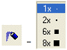
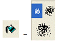
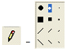
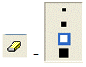
(정답률: 62%)
30. 한글 Windows XP의 바탕화면에서 아이콘의 크기를 조정하려고 할 때 사용하는 방법으로 옳은 것은?
- [디스플레이 등록 정보] 창의 [화면 배색] 탭에서 [고급] 단추를 선택하여 표시되는 [고급 화면 배색]에서 항목 란의 아이콘을 선택한 후 크기 값을 조정한다.
- 바탕 화면의 바로가기 메뉴의 [속성]을 선택하여 표시되는 [바로가기 아이콘 설정] 대화상자에서 아이콘의 크기 값을 조정한다.
- 바탕화면에 있는 해당 아이콘의 바로가기 메뉴의 [속성]을 선택하여 표시되는 [바로가기 아이콘 설정] 대화 상자에서 아이콘의 크기 값을 조정한다.
- [제어판]에 있는 [시스템]의 등록정보 창의 [바로가기 아이콘] 탭에서 아이콘의 크기 값을 조정한다.
(정답률: 29%)
31. 다음 중 한글 Windows XP에서 기본 프린터에 관한 설명으로 옳지 않은 것은?
- 사용할 프린터를 마우스 오른쪽 단추로 클릭한 다음 [기본 프린터로 설정]을 클릭한다.
- 현재 기본 프린터를 해제하려면 다른 프린터를 기본 프린터로 설정하면 된다.
- 인쇄 시 특정 프린터를 지정하지 않으면 자동으로 기본 프린터로 인쇄 작업이 전달된다.
- 기본 프린터만 바탕화면에 바로가기 아이콘을 만들 수 있다.
(정답률: 66%)
32. 다음 중 한글 Windows XP에서 레지스트리에 관한 설명으로 옳지 않은 것은?
- Windows는 부팅할 때와 종료할 때만 레지스트리 정보를 참조한다.
- Windows의 구성 정보를 저장하는 데이터베이스이다.
- Windows에 탑재된 레지스트리 편집기는 'regedit.exe'이다.
- 레지스트리에는 각 사용자의 프로필과 시스템 하드웨어 그리고 설치된 프로그램 및 속성 설정에 대한 정보가 들어 있다.
(정답률: 51%)
33. 한글 Windows XP에서 문서 편집기인 [메모장] 프로그램에 관한 설명으로 옳지 않은 것은?
- 다양한 문자 집합을 사용하는 문서를 편집할 때 융통성을 높여주기 위하여 유니코드, ANSI, UTF-8 또는 big endian 유니코드로 파일을 저장할 수 있다.
- 간단한 웹 페이지를 만들기 위한 도구로 사용할 수 있다.
- 글꼴, 글꼴 스타일, 글꼴 크기 등의 아주 기본적인 서식 만을 지원하는 텍스트 문서를 편집할 수 있다.
- 문서를 편집할 때 OLE 기능을 사용할 수 있다.
(정답률: 53%)
34. 한글 Windows XP에서 압축 폴더에 관한 설명으로 옳지 않은 것은?
- 압축 폴더 기능을 사용하여 폴더를 압축하면 디스크 공간을 절약할 수 있으며, 압축한 폴더를 다른 컴퓨터로 빠르게 전송할 수 있다.
- 압축 폴더와 파일 또는 그 안에 포함되어 있는 파일이나 프로그램을 일반 폴더에서 사용하는 것과 똑같이 사용할 수 있다.
- 압축 폴더를 컴퓨터의 다른 드라이브나 폴더로 이동시킬 수 있으며, 다른 파일 압축 프로그램을 사용하는 다른 사용자들과 압축 폴더를 공유할 수 있다.
- 다른 파일에 종속되어 있는 프로그램을 실행하려고 할 경우에 압축을 풀지 않고 압축 폴더에서 직접 실행할 수 있다.
(정답률: 57%)
35. 다음 중 한글 Windows XP의 부팅에 관한 설명으로 옳지 않은 것은?
- 부팅 과정은 POST 과정과 운영체제 로딩 과정으로 구분되어 수행된다.
- Windows를 부팅할 때 <F8> 키를 누르면 [Windows 고급 옵션 메뉴]가 표시된다.
- [표준 모드로 Windows 시작] 메뉴로 부팅하면 컴퓨터 작동에 필요한 최소한의 장치만을 설정하여 부팅한다.
- 컴퓨터에 여러 개의 운영체제가 설치되면 시스템 시작 화면에서 운영체제를 선택할 수 있는 다중 부팅 메뉴가 표시된다.
(정답률: 49%)
36. 한글 Windows XP에서 인터넷을 사용하기 위해 설정하는 IP 주소에 관한 설명으로 옳지 않은 것은?
- 인터넷을 사용하는 네트워크의 노드를 식별하는데 사용되는 64바이트의 주소이다.
- 네트워크 ID를 구성하는 고유 IP 주소뿐만 아니라 고유 호스트 ID가 할당되어 있어야 한다.
- IP 버전 6(IPv6)은 인터넷용 차세대 네트워크 계층 프로토콜을 위한 표준 프로토콜 집합이다.
- Windows XP에서는 DHCP를 통해 IP 주소를 동적으로 구성할 수 있다.
(정답률: 42%)
37. 다음 중 한글 Windows XP에서 [네트워크 연결] 창의 [보기]-[자세히] 메뉴를 선택하여 표시할 수 있는 네트워크 연결의 세부 항목이 아닌 것은?
- 네트워크의 장치 이름
- 네트워크의 종류
- 네트워크의 상태
- 네트워크용 파일 및 프린터 공유
(정답률: 61%)
38. 다음 중 한글 Windows XP의 [제어판]에 있는 [글꼴]과 관련하여 래스터 글꼴에 관한 설명으로 옳지 않은 것은?
- 비트맵으로 저장되는 글꼴이다.
- Courier, MS Sans Serif, MS Serif, Small, Symbol 등의 래스터 글꼴이 있다.
- 프린터에서 지원하지 않으면 래스터 글꼴은 인쇄되지 않는다.
- 크기 조정이나 회전이 가능하다.
(정답률: 33%)
39. 다음 중 한글 Windows XP의 [시스템 정보] 창에 관한 설명으로 옳지 않은 것은?
- 시스템 성능의 정보를 그래프로 볼 수 있다.
- 원격 컴퓨터의 시스템 정보를 볼 수 있다.
- 하드웨어 리소스, 구성요소, 소프트웨어 환경, 인터넷 설정 등의 시스템 요약 정보를 볼 수 있다.
- 네트워크 진단, 시스템 복원, 파일 서명 확인 유틸리티 등의 도구를 사용할 수 있다.
(정답률: 26%)
40. 다음 중 한글 Windows XP에서 폴더 창에 있는 파일이나 폴더를 선택하는 방법으로 옳지 않은 것은?
- 연속되는 여러 개의 파일이나 폴더를 선택하려면 마우스 끌어놓기로 선택 영역에 포함하면 된다.
- 연속되는 여러 개의 파일이나 폴더를 선택하려면 첫째 항목을 클릭한 다음에 [Shift] 키를 누른 상태에서 마지막 항목을 클릭하면 된다.
- 연속되어 있지 않은 파일이나 폴더를 선택하려면 [Ctrl] 키를 누른 상태에서 각 항목을 클릭하면 된다.
- 모든 항목이 선택된 상태에서 일부 파일이나 폴더의 선택을 취소할 경우에는 [Alt] 키를 누른 상태로 원하는 항목을 차례로 선택하면 된다.
(정답률: 58%)
3과목: 컴퓨터 및 정보활용
41. 다음 중 설명이 잘못된 것은?
- 링커 : 원시 프로그램의 오류를 찾아 수정하는 것
- 덤프 : 프로그램의 오류를 체크하기 위해 필요한 데이터 내용을 그대로 출력하는 것
- 로더 : 목적 프로그램을 주기억 장치에 적재하여 실행 가능하도록 해주는 프로그램
- 버그 : 소프트웨어나 하드웨어의 오류나 결함
(정답률: 49%)
42. 다음 중 LAN 연결 방식에 대한 설명으로 옳지 않은 것은?
- 스타형(Star) : 모든 단말기를 일렬로 연결한 형태로 유지 보수 및 확장이 어렵다.
- 링형(Ring) : 이웃한 컴퓨터를 링처럼 서로 연결한 형태로 기밀 보호가 어렵다.
- 계층형(Tree) : 중앙의 컴퓨터와 단말기를 하나의 통신 회선으로 연결시키고, 이웃하는 단말 장치를 중간 단말 장치로 다시 연결시키는 형태이다.
- 망형(Mesh) : 모든 단말기를 그물처럼 서로 연결한 형태로 응답시간이 빠르다.
(정답률: 56%)
43. 그림 파일을 표시하는데 있어서 이미지의 대략적인 모습을 먼저 보여준 다음 점차 자세한 모습을 보여주는 기법을 무엇이라 하는가?
- 인터레이싱(Interacing)
- 메조틴트(Mezzotint)
- 솔러리제이션(Solarization)
- 로토스코핑(Rotoscoping)
(정답률: 53%)
44. 다음 보기의 내용은 무엇에 대한 설명인가?
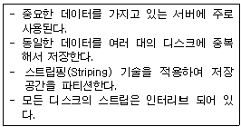
- DVD
- RAID
- Juke Box
- Jaz Drive
(정답률: 61%)
45. 다음 중 가상기억장치(Virtual Memory)에 대한 설명으로 옳지 않은 것은?
- 저장된 내용을 찾을 때 주소를 사용하지 않고 기억된 데이터의 내용을 이용하여 원하는 정보에 접근한다.
- 보조기억장치의 일부를 주기억장치처럼 이용하여 주기억장치의 용량이 확대된 것처럼 사용한다.
- 페이징(Paging) 기법이나 세그멘테이션(Segmentation) 기법을 이용한다.
- 주프로그램은 보조기억장치에 저장시키고 CPU에 의해 실제로 사용할 부분만 주기억장치에 적재시키는 방법을 이용한다.
(정답률: 30%)
46. 하드디스크로 부팅이 되지 않을 경우 취해야 할 조치로 가장 옳지 않은 것은?
- 일단 부팅 가능한 CD-ROM이나 플로피디스크로 부팅해 본다.
- CMOS 설정에서 하드디스크가 정상적으로 설정되었는지 확인한다.
- 메모리 부족 현상이므로 메모리를 증설한다.
- 부팅 디스크를 이용하여 디스크 검사를 한다.
(정답률: 58%)
47. 다음 중 컴퓨터에서 컬러를 나타내는 방법과 관련이 없는 것은?
- RGB 방식
- PCB 방식
- HSB 방식
- YUV 방식
(정답률: 35%)
48. 오디오 신호는 아날로그 이므로 컴퓨터에서 사용하기 위해서는 디지털 신호로 변환해야 하며, 디지털 신호로 변환하기 위한 첫 번째 단계가 샘플링이다. 다음 중 샘플링에 대한 설명으로 옳지 않은 것은?
- 소리 파형을 일정시간 간격으로 추출한 것을 샘플이라고 한다.
- 샘플링 율(Sampling Rate)이 높으면 높을수록 원음에 보다 가깝다.
- 샘플링 주파수(Sampling Frequency)는 높으면 높을수록 좋고 기억 용량도 작아진다.
- 샘플링 비트(Sampling Bit) 수는 음질에 영향을 미친다.
(정답률: 60%)
49. 다음 중 여러 사용자들이 공유할 수 있는 저장 장치 및 기타 시스템 자원들을 제공하는 것을 무엇이라고 하는가?
- 기억 장치
- 개인용 PC
- 클라이언트
- 네트워크 서버
(정답률: 44%)
50. 다음 중 PC 통신 용어에 대한 설명으로 옳지 않은 것은?
- 단향 방식(Simplex Mode) : 동시에는 송수신이 불가능하나 양방향 송수신이 가능한 전송방식이다.
- 패리티 비트(Parity Bit) : 데이터 전송시 에러 검출을 위해 데이터 비트에 붙여서 보내는 비트이다.
- 정지 비트(Stop Bit) : 전송되는 데이터의 끝을 알리기 위해 보내는 비트이다.
- 흐름 제어(Flow Control) : 자료를 송수신할 때 버퍼의 크기에 따른 속도의 흐름을 조절하기 위한 기능이다.
(정답률: 52%)
51. 다음 중 컴퓨터 프로그램의 저작자의 권리를 보호하고 프로그램의 공정한 이용을 도모하기 위해 만들어진 컴퓨터 프로그램 보호법에서 다루지 않는 사항은 어느 것인가?
- 프로그램 저작권
- 프로그램의 등록
- 권리의 침해에 대한 구제
- 프로그램개발 기법
(정답률: 54%)
52. 다음 중 세션으로 주고받는 자료를 암호화 하고 전자 사인을 해서 주고받는 메커니즘을 사용하는 WWW 보안 프로토콜은 어느 것인가?
- PGP
- RSA
- SSL
- Smart Card
(정답률: 50%)
53. 다음 보기의 내용은 무엇에 대하여 설명한 것인가?
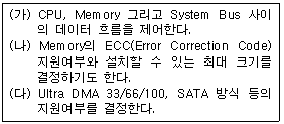
- 칩셋(Chip Set)
- SCSI 카드
- PCMCIA 카드
- AGP
(정답률: 55%)
54. 다음 중 2진수 1010.101을 10진수로 올바르게 표현한 것은?
- 10.625
- 10.5
- 10.875
- 10.6875
(정답률: 40%)
55. 운영체제는 제어 프로그램과 처리 프로그램으로 구성된다. 다음 중 제어 프로그램이 아닌 것은?
- 감시 프로그램
- 작업 관리 프로그램
- 언어 번역 프로그램
- 자료 관리 프로그램
(정답률: 59%)
56. 다음 중 백신 프로그램이 아닌 것은?
- 바이로봇
- 노턴 안티바이러스
- 피시시린
- 사이게이트
(정답률: 52%)
57. 언어 번역 프로그램 중 인터프리터(interpreter)에 대한 설명으로 옳지 않은 것은?
- 고급언어에서 사용
- 목적코드(object code)를 생성
- 원시 프로그램을 한 문장씩 읽어 번역하고 바로 실행
- 느린 실행 속도
(정답률: 32%)
58. 다음 중 실제 소리를 A/D 변환기를 통해 디지털 데이터로 변환하여 음원 칩에 저장하였다가 필요시에 D/A 변환기를 통해 내보냄으로써 원하는 음을 얻을 수 있는 방식은?
- FM 방식
- PCM 방식
- PD 방식
- LA 방식
(정답률: 50%)
59. 다음 중 데이터 통신의 프로토콜을 정의하는 OSI(Open Systems Interconnection)의 7계층(Seven Layer)에 대한 설명으로 옳지 않은 것은 ?
- 물리 계층(Physical Layer) : 네트워크의 물리적 특징 정의
- 네트워크 계층(Network Layer) : 데이터 교환 기능 정의 및 제공
- 세션 계층(Session Layer) : 데이터 표현 형식 표준화
- 응용 계층(Application Layer) : 응용 프로그램과의 통신제어 및 실행
(정답률: 51%)
60. 다음 보기에서 설명하는 컴퓨터는 어느 것인가?
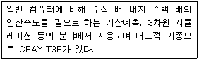
- 워크스테이션
- 아날로그 컴퓨터
- 슈퍼 컴퓨터
- 랩탑 컴퓨터
(정답률: 71%)
오버프린트(Over Print) : 대상체의 컬러가 배경색의 컬러보다 짙을 때에 겹쳐서 인쇄하는 방법이다. - 옳은 설명입니다.
필터링(Filtering) : 작성된 그림을 필터 기능을 이용하여 여러 가지 형태의 새로운 이미지로 바꾸어 주는 기능이다. - 옳은 설명입니다.
클립아트(Clipart) : 작업문서에 자주 사용되는 다양한 그림을 모아 둔 작은 그림의 모음집이다. - 옳은 설명입니다.
따라서, 옳지 않은 것은 없습니다.